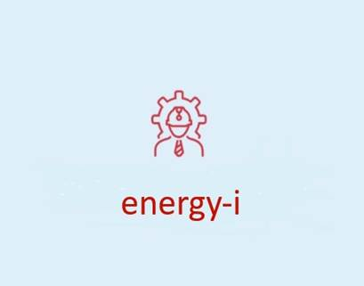
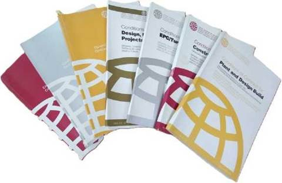
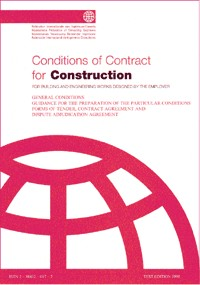
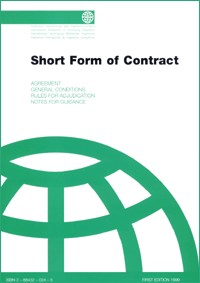
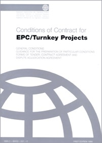

FIDIC Contracting Expertise

energy-i specialise in avoiding contract disputes before they arise
energy-i work with and advise our clients on the use of the FIDIC suite of contracts for energy and infrastructure projects.
At energy-i our approach is unique, as our focus is on avoiding contract disputes, to avoid long and costly claims and dispute processes for all parties.
At energy-i our ability to understand both technical and commercial /contractual aspects of a project is key.
FIDIC - what is it?
FIDIC contracts, developed by the International Federation of Consulting Engineers;
- in French Federation Internationale Des Ingenieurs Conseils or FIDIC.
FIDIC contract templates are a cornerstone of international energy and infrastructure projects. The FIDIC suite of contracts are designed to ensure clarity in roles, responsibilities, and risk allocation.
FIDIC`s robust and comprehensive framework of contracts is widely used internationally for large-scale sometimes complex infrastructure and energy projects.
FIDIC Rainbow Suite - Which one is used where?

The FIDIC suite includes several widely recognized model form contract templates called `books` . Each has been developed for specific project types and requirements:There are 4 main contract templates or books
1. Red Book (Conditions of Contract for Construction):
For projects where the employer provides the design, making it suitable for traditional construction contracts.

Many of our clients are familiar with the Red Book even if they do not use the FIDIC suite.The first edition of the FIDIC Red Book, published in 1957, was not drafted entirely from scratch. Instead, it was an authorised `re-badging` of the Institution of Civil Engineers (ICE) Conditions of Contract. The. FIDIC Red book was a formalisation the heavily modified the ICE framework already in wide use, and retains much of the original ICE structure and clause numbering
2. Yellow Book (Conditions of Contract for Plant and Design-Build):
For projects where the contractor is responsible for both design and construction.
3. Silver Book (Conditions of Contract for EPC/Turnkey Projects):
For engineering, procurement, and construction projects, where the contractor takes on a turnkey delivery role with minimal employer involvement.
4.

Green Book (Short Form of Contract):A simplified contract for smaller projects or less complex works. The Green Book is increasingly used since issue in 1999 and is now part of the Rainbow Suite. FIDIC states it is for engineering and construction works of relatively small capital value, or for 'fairly simple or repetitive work` contracts. It is used for works of value normally less than USD $500,000 and of less than 6 months duration.
There are 4 ancillary or supporting model form FIDIC contract templates;
1. Gold Book (Conditions of Contract for Design, Build, and Operate): For projects that combine the design, construction, and operation phases into a single contractual arrangement. The Gold Book is a design-build contract, which is heavily based on the Yellow Book, with an agreement attached for operation and maintenance during a typical 20-year Operation Service Period.
2. Blue Book (Dredging and Reclamation Contract): Designed for dredging and reclamation works, as well as
ancillary construction projects. The FIDIC Dredging Contract is sometimes known as
the Blue Book or Blue-Green Book, Prepared in conjunction with the
International Association of Dredging Companies, the Dredging Contract has been
extensively used for coastal and
marine works of all kinds, including ports and harbours. It is widely used in
the Middle East
by a highly specialised marine sector. It bears some resemblance to the Green
Book Short Form of Contract in being a straightforward, simplified contract,
which can be executed on a design-build basis or with a significant employer
design element
3. White Book (Client/Consultant Model Services Agreement): Used for agreements between clients and consultants, such as
architects or engineers. They differ from the Rainbow Suite contracts and the
other standard forms above in that they are not construction contracts and do
not involve the contractor. The contract is between the 'purchaser' of the services:
'Client' rather than 'Employer', and the 'supplier' of
the services: 'Consultant' rather than 'Contractor'. FIDIC's intention was to produce an agreement for 'general use
for the purposes of pre-investment and feasibility studies, detail design and
administration of construction and project management, both for Employer-led
design teams and for Contractor-led design teams on design and build
commissions'.
4. Pink Book (The Multilateral Development Banks Harmonised Red Book) : A version of the Red Book adapted for Multilateral Development Bank-financed projects. The Pink Book is formalisation of the amendments to the Red Book that had been developed by Multilateral Development Banks (MDBs) for use in aid-funded projects. The FIDIC Red Book was used widely, over many years, on development projects funded by banks as part of mandatory bidding documents to which borrowers had to adhere. The purpose was to 'simplify the use of the FIDIC Conditions of Contract not only for the MDBs and their borrowers but also for others involved with project procurement including engineers, contractors, and contract specialists. It is intended for use on MDB financed projects only.
Sub-contracting under FIDIC
Conditions for Subcontract for Construction for Building and Engineering Works Designed by the Employer, 2011.
Role of the Engineer
The Engineer plays a significant role within the risk management system in the implementation of construction projects based on FIDIC contracts. In al contracts except Silver Book the Engineer performs the tasks of technical supervision and contract administration, but also contributes to the prevention of adverse events, the allocation of responsibilities between the parties, and the procedural resolution of emerging disputes.
The Engineer plays an important role in coordinating changes, documenting contract-relevant circumstances, and reducing the likelihood of disputes
Fidic Sliver Book
Traditional FIDIC forms such as the Red Book relied on shared risk and an independent Engineer acting as a fair mediator. However, during the 1990s boom in private infrastructure and independent power projects (IPP), private lenders and project financiers refused to back ventures with open-ended cost overruns or schedule delays. The Silver Book was developed specifically to transfer underground, weather, and design coordination risks to a single-point contractor in exchange for a fixed lump-sum price.
The Silver Book was introduced to meet the needs of the project finance market, where lenders demand a high degree of certainty on cost and time. The Silver Book is a `turnkey` contract and has some notable features;
- Maximum Risk Transfer: In theory The Contractor takes on almost all risks related to design, construction, and project completion for a fixed price.
- Turnkey Delivery: The Contractor hands over a fully operational facility to the Employer.
- Limited Employer Role: The role of the Engineer is removed, and the Employer's direct involvement is minimized.
When is it used?
- It is used for major privately-financed projects like power plants where the Employer is less of a technical expert and prioritises cost and time certainty above all else.

The Real-World FIDIC Silver Book Contracting;
During contract negotiations, contractors heavily push back against standard FIDIC Silver Book terms because the default framework transfers almost all project risk to them.
Because an unamended Silver Book can expose an EPC contractor to catastrophic financial losses, legal and commercial teams typically target several core clauses for heavy modification
- Employer`s Requirements (Sub-Clause 5.1)
- Unforeseen Subsurface and Ground Conditions (Sub-Clause 4.12)
- Absolute `Fitness for Purpose` Guarantees (Sub-Clause 4.1)
|
Silver Book Default |
Typical Contractor Amendment |
|
Contractor carries all design data risk. |
Employer remains liable for un-verifiable baseline data. |
|
Contractor absorbs all ground risk. |
Insert Yellow Book Sub-Clause 4.12 (Unforeseeable Physical Conditions). |
|
Absolute fitness for purpose. |
Tied strictly to PI insurance policy limits. |
|
Gross negligence bypasses liability caps. |
Remove gross negligence or tightly define it contractually. |
Lack of an Independent Engineer in Silver Book;
The Standard Term: The Silver Book removes the traditional, independent "Engineer" role. Instead, the contract is administered directly by an Employer`s Representative, meaning the employer serves as both a party to the contract and its initial judge.